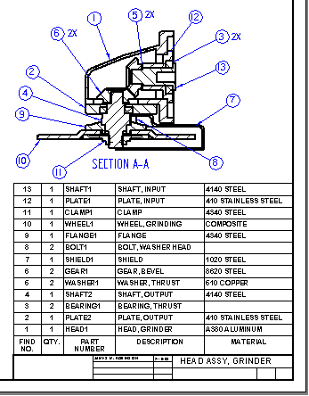
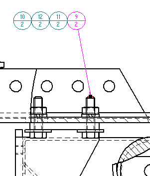
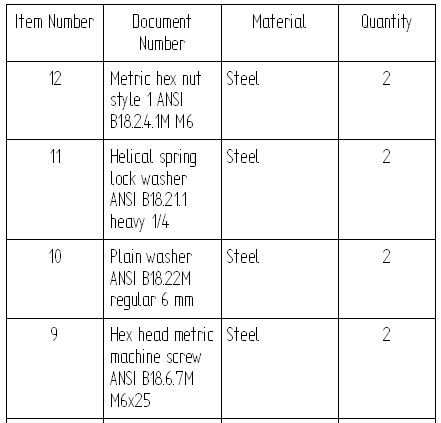
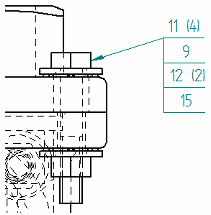

Balloons
Many companies include parts lists in their assembly drawings to give additional information about individual assembly components. For example, part number, material, and the quantity of parts required are typically documented in a parts list.
-
You can add balloons to the drawing, and the balloons can be numbered to correspond to the part entries in a parts list.
-
Balloons also can display property text extracted from a source file.

Automatic balloons on a part view
You can automatically add balloons to a part view of an assembly based on its parts list when you choose one of the parts list commands and set the Auto-Balloon option on the command bar.
When you select the part view that you want to balloon, the parts list and the balloons that reference it are created automatically.
You also can create balloons automatically without placing a parts list. To learn how to do this, see the Help topic, Automatically add balloons to a part view. When using this technique, you also can use the Annotation Alignment Shape command to create a user-defined shape to aid in automatic balloon alignment.

Controlling duplicate balloons
You can specify varying levels of control for duplicate balloons using the Auto-Balloon options on the Balloon page (Parts List Properties dialog box). For example, when working with multiple drawing views, you can specify that no part item has more than one balloon shown in the entire document, no matter how many drawing views show the part.
Adjusting balloon text size and clearance
You can adjust the horizontal and vertical gap between the balloon text and the balloon border using the following options on the Spacing tab (Dimension Style and Dimension Properties):
-
Text clearance gap—Specifies horizontal spacing between the text and the border.
-
Vertical box gap—For No Shape balloons, specifies the vertical spacing.
The appearance of automatically generated balloons is specified by options on the Balloon page (Parts List Properties dialog box). Here, for example, you can adjust the text size of the balloons before you add them to the drawing by typing a new value in the Text Size box.
Balloon item numbers and item count
You can specify that balloons in a part view of an assembly display item numbers that reference the item numbers in a parts list.
-
If you place the balloons before you create the parts list, the item numbers are assigned sequentially in the order you select the parts.
-
If you place the balloons after you create the parts list, the item numbers in the balloons match the active parts list.
Note:There can be multiple parts lists on a drawing. The most recently created parts list is the active parts list.
You can make a different parts list the active parts list by clicking Make Active on the shortcut menu with the parts list selected.
To assign item numbers, use the Balloon command and set these options on the Balloon command bar:
-
To automatically generate balloons, choose the type of parts list—Link To Parts List or Link to Family of Assemblies Parts List—and then click a parts list on the drawing.

-
Item Number
 , which automatically generates the balloon item numbers. If you clear the Item Number
option, then you can add the item numbers individually to each balloon.
, which automatically generates the balloon item numbers. If you clear the Item Number
option, then you can add the item numbers individually to each balloon. -
Item Count
 , which adds the part quantity value to the bottom half of the balloon.
, which adds the part quantity value to the bottom half of the balloon.For underline balloon shapes, which do not have a designated box to display the item count, you can use the Parts List Quantity Property Text option
 to insert the item count in the Prefix or Suffix of the underline balloon.
to insert the item count in the Prefix or Suffix of the underline balloon.
You can modify the balloon item numbers and the parts list at the same time.
-
To edit the item number values in the parts list and in the balloons, use the Item Number tab (Parts List Properties dialog box.
-
To change the item number formatting, use the Options tab (Parts List Properties dialog box.
Balloons that reference text or properties
You can create balloons that reference properties in a source document. Some examples of document related properties include project, part document number, material specification, and revision. To do this, use the Property Text button on the General tab in the Balloon Properties dialog box.
You also can reference specific text fields from other annotations. For example, in a balloon you can reference the text from another balloon, or from a callout, datum frame, datum target, or drawing view. To do this, use the Reference Text button on the Balloon command bar.
You can assign reference text or property text to different text locations in the balloon—(A), (B), (C), and (D)—by adding the property text string or the reference text string into the Upper, Lower, Prefix, and Suffix boxes on the Balloon command bar.

To insert reference text at text location (A), you must clear the Item Number option on the Balloon command bar.
For more information about when to use property text and when to use reference text, see Referencing properties.
To learn how to create or modify balloons so that they show a document number or other document property, see Show document properties in balloons.
Stacking balloons
When multiple balloons reference items in the same parts list group, they often overlap one another and it is difficult to see what the leaders are pointing to. The parts that comprise a fastener group, for example—bolt, washer, lock washer, and nut—are small and close together. To make these balloons legible, you can stack the balloons.
You can place stacked balloons on fastener systems automatically using the Balloon command or the Parts List command. You also can stack manually placed balloons by dragging them.
-
You can use the Balloon command, along with the following options on the command bar, to add horizontally or vertically stacked fastener system balloons automatically.
-
Fastener System Stack

-
Link to Parts List
The stack arrangement and text alignment properties are specified on the General page (Balloon Properties dialog box).
-
-
You can use the Parts List command, along with the Auto-Balloon option on the command bar, to place a ballooned parts list for a drawing view that contains fastener system components. Before placing the parts list, you can use the options in the Fastener System group on the Balloon page (Parts List Properties dialog box) to specify that the fastener balloons are stacked automatically and to specify alignment and text orientation.
In either case, if a part item number changes, its balloon also updates.
When balloons are stacked, they align vertically or horizontally, with a single leader attached to the first balloon in the stack. This example shows a horizontal stack and accompanying parts list. The first balloon is the one at right with the attached leader.


To learn how to arrange balloons in a stack automatically and manually, see the Help topic, Stack balloons.
You can edit the prefix and suffix text of one or more balloons in a fastener system stack.

To learn how, see the Help topic, Edit balloon text in a stack.